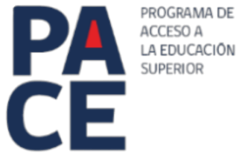
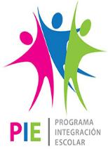
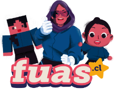

Programas
En nuestro establecimiento se cuenta con una variedad de programas los cuales son de gran utilidad y apoyo para todos nuestros/as estudiantes. Además de ayudar a nuestros estudiantes en su ultimo año, brindando el apoyo para la Educación Superior.
PACE
Es un programa que busca permitir el acceso a la educación superior a estudiantes de enseñanza media destacadas y destacados, provenientes de contextos vulnerables, mediante la realización de acciones de preparación y apoyo permanente, y el aseguramiento de cupos, por parte de las 29 instituciones de educación superior participantes del programa.
OBJETIVOS DEL PROGRAMA PACE
Asegurar la preparación de las y los estudiantes de sectores vulnerables que cursan III y IV medio en alguno de los establecimientos educacionales PACE. Asegurar el acceso y el acompañamiento académico y psicoeducativo de las y los estudiantes PACE que resulten habilitados y se matriculen en alguna de las instituciones de educación superior PACE en convenio.
PIE
El PIE es una estrategia inclusiva del sistema educacional, que tiene el propósito de contribuir al mejoramiento continuo de la calidad de la educación, favoreciendo los aprendizajes en la sala de clases y la participación de todos y cada uno de los estudiantes, especialmente de aquellos que presentan Necesidades Educativas Especiales (NEE). El Programa de Integración Escolar se constituye en un conjunto de recursos y apoyos para los establecimientos educacionales, que en el aula se traducen en estrategias pedagógicas diversificadas, recursos humanos especializados, capacitación para los docentes y materiales educativos pertinentes a las necesidades de los estudiantes.

FUAS
Para nuestros estudiantes de 4° año medio les orientamos y apoyamos su proceso hacia la Educación Superior. Es por esto que gracias a nuestros orientadores podemos llevar de manera exitosa que nuestros estudiantes sea cual sea su situación socioeconómica, le entregamos ayuda en todo su proceso.
¿Qué es el FUAS?
Es el Formulario Único de Acreditación Socioeconómica creado por el Ministerio de Educación para facilitar tu inscripción simultánea a gratuidad y a todas las becas y créditos de arancel, de acuerdo al reglamento vigente. A través de este instrumento, es posible conocer la situación socioeconómica de la/el postulante y su grupo familiar. Esta información se verifica luego con diversas bases de datos de organismos del Estado.
